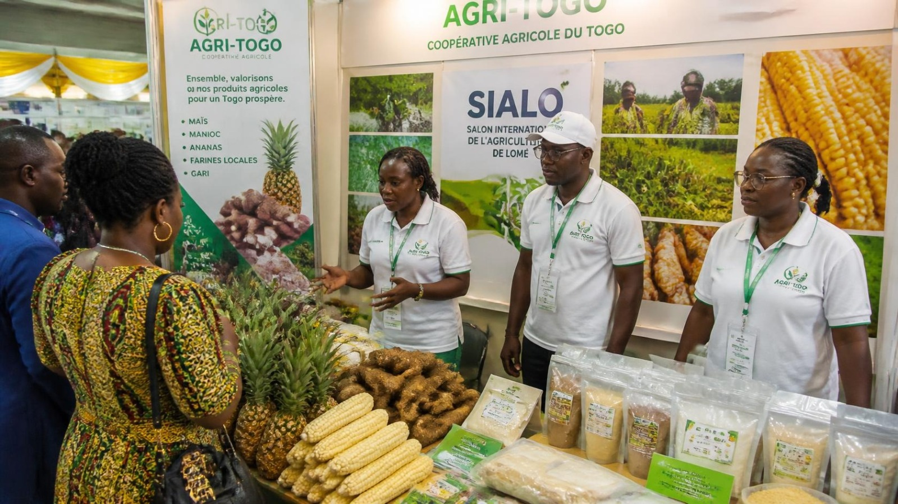

12 Février 2026
Participation à la Foire Nationale de Lomé
AGRI-TOGO a exposé ses produits transformés lors de la 18e édition de la foire agricole.
AGRI-TOGO est une coopérative agricole (fictive, à usage pédagogique) regroupant des producteurs de la région Maritime et des Plateaux au Togo. Elle valorise des produits locaux — maïs, manioc, ananas, ainsi que des produits transformés (farines, jus, gari) — et accompagne ses membres dans la commercialisation et la formation aux bonnes pratiques agricoles.
Cultivez l'avenir, nourrir le TogoMembres et producteurs
Régions couvertes (Maritime & Plateaux)
Produits locaux & transformés
Formations dispensées / an

AGRI-TOGO a exposé ses produits transformés lors de la 18e édition de la foire agricole.
Plus de 40 producteurs ont participé à notre atelier pratique dans la région des Plateaux.
Nos coopérateurs de Kpalimé débutent la récolte annuelle d'ananas biologiques.
Découvrez nos opportunités d'accompagnement et de commercialisation.
Contactez-nous dès aujourd'hui